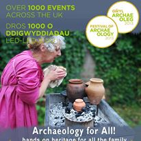
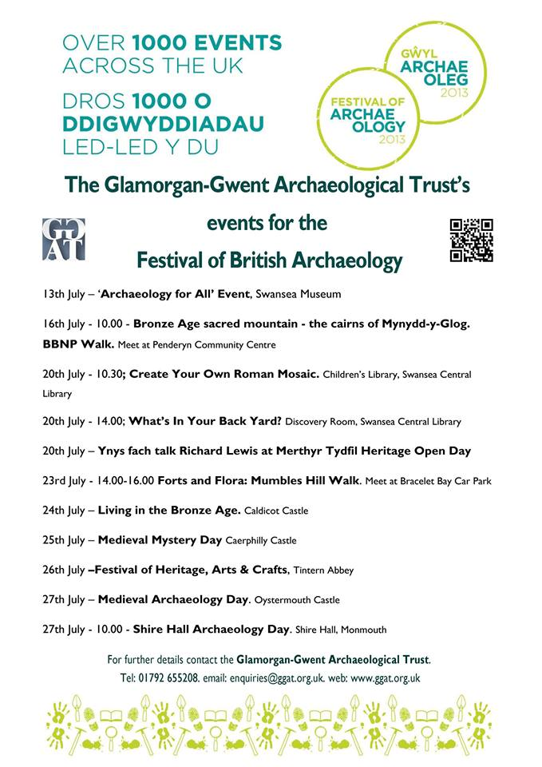

Blog
Archaeology for All @ Swansea Museum

Saturday kicked off the start of the ‘Festival of British Archaeology’, with an event held in Swansea Museum. Unfortunately, the sunshine and the Swansea Airshow conspired against us, keeping the crowds away, but the day was still extremely useful, and I met a number of very interesting people.
I was lucky enough to be stationed across the way from Swansea University’s stand, and so spent a fascinating morning discussing the de Breos family with the leading expert Prof Dan Power. I had a great time discussing the project with Rod Cooper, a local map maker with a special interest in the history of the Gower, and John Robertson, a volunteer at GGAT. As locals, they were particularly interested in our plans for involving the public, including the pavement markers and 3D visualisations. Finally, I finally met Neil, Charina and Paul from GGAT. It was great hearing about their experiences of the project so far, and telling them about our most recent discoveries. I would like to thank them for arranging the day and their interesting insights.
The maps really grabbed everyone’s attention, as they were eager to share their experiences and local knowledge. On the 3D map of the Mumbles I showed them, Dan was pointing out where his Doctors surgery and children’s school was, while John was reminiscing about his childhood home, and how the area had changed over the years.
Thanks again to the GGAT team and Swansea Museum for organising everything. For deatils of further events being organised by GGAT as part of the ‘Festival of British Archaeology’, please see the flyer below:

Share on Twitter Share on Facebook